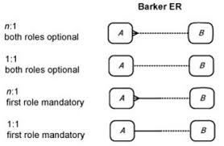
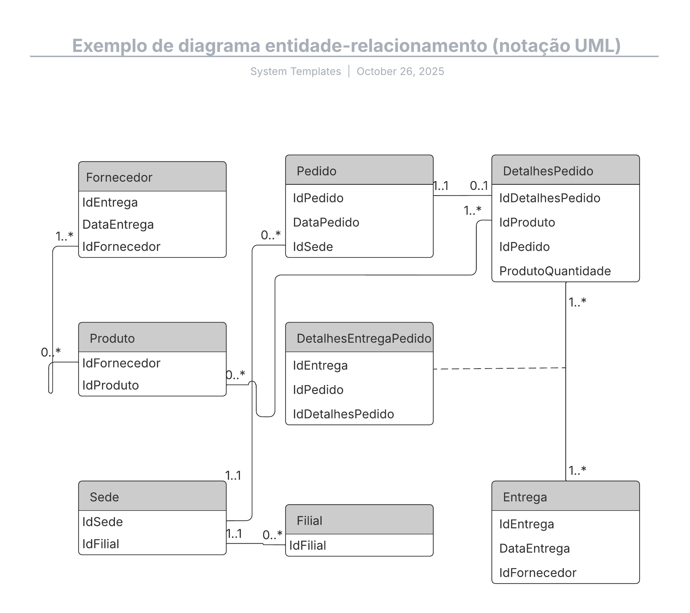

Aula 5 - PK, FK e Padronização do banco de dados "Escola"
Chaves Primárias (Primary Keys - PK)
Uma chave primária (PK) é um identificador único para cada registro em uma tabela. No nosso modelo:
- Cada tabela possui sua própria PK chamada
id - São valores únicos e não podem ser nulos
- Geralmente são números inteiros auto incrementais
Chaves Estrangeiras (Foreign Keys - FK)
Chaves estrangeiras (FK) estabelecem relacionamentos entre tabelas. Em nosso modelo temos:
-
aluno_idem ENDEREÇOS - liga cada endereço a um aluno -
aluno_idem TELEFONES - associa telefones aos alunos -
aluno_idecurso_idem MATRÍCULAS - conecta alunos aos cursos
Constraints (Restrições)
Principais constraints utilizadas:
-- NOT NULL: Campo não pode ser vazio
nome VARCHAR(100) NOT NULL,
email VARCHAR(100) NOT NULL,
-- UNIQUE: Valor deve ser único na tabela
email VARCHAR(100) NOT NULL UNIQUE,
-- CHECK: Valida valores permitidos
status VARCHAR(20) CHECK (status IN ('Ativo','Inativo','Trancado')),
-- DEFAULT: Define valor padrão
data_cadastro TIMESTAMP DEFAULT CURRENT_TIMESTAMP
Finalização do MER
Embora não foi dito em aula, toda parte de modelação/arquitetura que fizemos é chamado de MER (Modelo Entidade-Relacionamento)
O MER é uma representação gráfica que descreve a estrutura lógica do banco de dados, incluindo entidades, atributos e relacionamentos.
Uma entidade seria uma tabela, nossa tabela "aluno", por exemplo
Um atributo seria uma coluna, como "nome" na tabela aluno
E um relacionamento seria a ligação entre tabelas, como a FK "aluno_id" na tabela endereços
A notação que liga essas tabelas são:
- Linha reta: representa um relacionamento "um para um" (1:1)
- Linha com pé de galinha: representa um relacionamento "um para muitos" (1:N)
- Linha com dois pés de galinha: representa um relacionamento "muitos para muitos" (N:N)
Na aula só vimos a notação Pé de Galinha (do inglês, Crow's Foot Notation), mas existem outras:
-
Notação de Chen: Usa retângulos para entidades,
elipses para atributos e losangos para relacionamentos.
-
Notação de barker: Este estilo é uma variação da
notação Pé de Galinha, popularizada por seu uso pela Oracle. Linhas
contínuas: Para relacionamentos obrigatórios. Pontilhadas: Para
relacionamentos opcionais. Cardinalidade: Usa símbolos semelhantes
ao Pé de Galinha (traços, círculos e o símbolo de pé de galinha),
mas sua representação visual pode ser mais integrada ao estilo da
ferramenta.

-
Notação UML (Unified Modeling Language): Utiliza
classes e associações, sendo mais comum em modelagem orientada a
objetos.

Padronizando o nosso banco
Até agora nós criamos e deletamos tabelas constantemente para entender os conceitos.
Agora vamos padronizar o nosso banco de dados "Escola", criando todas as tabelas com suas chaves primárias, estrangeiras e constraints.
Vamos inserir dados, atualizar e na proxima aula aprofundar nas consultas de dados.
Script completo do banco "escola"
-- Criação do banco de dados
-- ========================================
-- CRIANDO AS TABELAS
-- ========================================
-- 1. TABELA DE SEXOS (inclusão e diversidade)
CREATE TABLE sexos (
id SERIAL PRIMARY KEY,
codigo CHAR(1) UNIQUE NOT NULL,
descricao VARCHAR(20) NOT NULL,
pronome VARCHAR(10)
);
-- 2. TABELA DE ALUNOS (dados principais)
CREATE TABLE alunos (
id SERIAL PRIMARY KEY,
nome VARCHAR(100) NOT NULL,
sexo_id INT NOT NULL,
cpf varchar(14) UNIQUE NOT NULL,
created_at TIMESTAMP DEFAULT NOW(),
FOREIGN KEY (sexo_id) REFERENCES sexos(id) ON DELETE RESTRICT
);
-- 3. TABELA DE ENDEREÇOS
CREATE TABLE enderecos (
id SERIAL PRIMARY KEY,
id_aluno INT NOT NULL,
rua VARCHAR(200) NOT null,
numero int8,
bairro VARCHAR(200),
cidade VARCHAR(200),
complemento TEXT
);
-- Adicionando constraint de FK na tabela endereços
ALTER TABLE enderecos
ADD CONSTRAINT fk_aluno
FOREIGN KEY (id_aluno)
REFERENCES alunos (id)
ON DELETE CASCADE
ON UPDATE CASCADE;
-- 4. TABELA DE TELEFONES
CREATE TABLE telefones (
id SERIAL PRIMARY KEY,
id_aluno INT NOT NULL,
numero VARCHAR(15) NOT NULL,
FOREIGN KEY (id_aluno) REFERENCES alunos(id) ON DELETE CASCADE
);
-- 5. TABELA DE PROFESSORES
CREATE TABLE professores (
id SERIAL PRIMARY KEY,
nome VARCHAR(100) NOT NULL UNIQUE
);
-- 6. TABELA DE CURSOS
CREATE TABLE cursos (
id SERIAL PRIMARY KEY,
nome VARCHAR(50) NOT NULL UNIQUE,
professor_id INT NOT NULL,
FOREIGN KEY (professor_id) REFERENCES professores(id) ON DELETE RESTRICT
);
-- 7. TABELA DE MATRÍCULAS (relacionamento N para N entre alunos e cursos)
CREATE TABLE matriculas (
id SERIAL PRIMARY KEY,
matricula_id_aluno INT NOT NULL,
curso_id INT NOT NULL,
nota DECIMAL(4,2),
data_matricula DATE DEFAULT CURRENT_DATE,
FOREIGN KEY (matricula_id_aluno) REFERENCES alunos(id) ON DELETE CASCADE,
FOREIGN KEY (curso_id) REFERENCES cursos(id) ON DELETE CASCADE,
UNIQUE(matricula_id_aluno, curso_id) -- Evita matrícula duplicada no mesmo curso
);
-- ========================================
-- INSERINDO OS DADOS
-- ========================================
-- Passo 1: Inserir Sexos (inclusão e diversidade)
INSERT INTO sexos (codigo, descricao, pronome) VALUES
('M', 'Masculino', 'ele/dele'),
('F', 'Feminino', 'ela/dela'),
('N', 'Não-binário', 'elu/delu'),
('O', 'Outro', 'elu/delu'),
('P', 'Prefiro não dizer', NULL);
-- Passo 2: Inserir Professores
INSERT INTO professores (nome) VALUES
('Prof. Carlos Eduardo'),
('Profa. Juliana Santos');
-- Passo 3: Inserir Cursos (com os professores)
INSERT INTO cursos (nome, professor_id) VALUES
('PostgreSQL Essencial', 1), -- Professor Carlos Eduardo (id 1)
('Python para Dados', 2); -- Professora Juliana Santos (id 2)
-- Passo 4: Inserir Alunos (agora com sexo_id)
INSERT INTO alunos (nome, sexo_id, cpf) VALUES
('Alice Silva', 2, '12345678911'), -- Feminino
('Bruno Mendes', 1, '12345678912'), -- Masculino
('Sam Oliveira', 3, '12345678913'), -- Não-binário
('Jordan Santos', 5, '12345678914'), -- Prefiro não dizer
('Taylor Lima', 3, '12345678915'); -- Não-binário
-- Passo 5: Inserir Endereços
INSERT INTO enderecos (id_aluno, rua, numero, bairro, cidade, complemento) VALUES
(1, 'Rua das Flores', 150, 'Centro', 'São Paulo', ''),
(2, 'Av. Central', 500, 'Ipanema', 'Rio de Janeiro', null),
(3, 'Rua Augusta', 200, 'Vila Queiroz', 'Limeira', null),
(4, 'Av. Paulista', 1000, 'Werner Plaz', 'Americana', ''),
(5, 'Rua Oscar Freire', null, 'Fim de Mundo', 'Santa Bárbara D Oeste', 'fim de mundo não tem numero');
-- Passo 6: Inserir Telefones
INSERT INTO telefones (id_aluno, numero) VALUES
(1, '(11) 98765-4321'),
(1, '(11) 3333-2222'), -- Alice tem 2 telefones
(2, '(21) 99999-1111'),
(3, '(11) 97777-5555'),
(3, '(11) 96666-4444'),
(4, '(11) 95555-3333'),
(5, '(11) 94444-2222'),
(5, '(11) 93333-1111'),
(5, '(11) 92222-0000'); -- Taylor tem 3 telefones
-- Passo 7: Inserir Matrículas (com notas)
INSERT INTO matriculas (matricula_id_aluno, curso_id, nota) VALUES
(1, 1, 9.50), -- Alice em PostgreSQL
(1, 2, 8.80), -- Alice em Python
(2, 1, 7.00), -- Bruno em PostgreSQL
(3, 2, 9.20), -- Sam em Python
(4, 1, 8.50), -- Jordan em PostgreSQL
(4, 2, 7.80), -- Jordan em Python
(5, 1, 9.00); -- Taylor em PostgreSQL